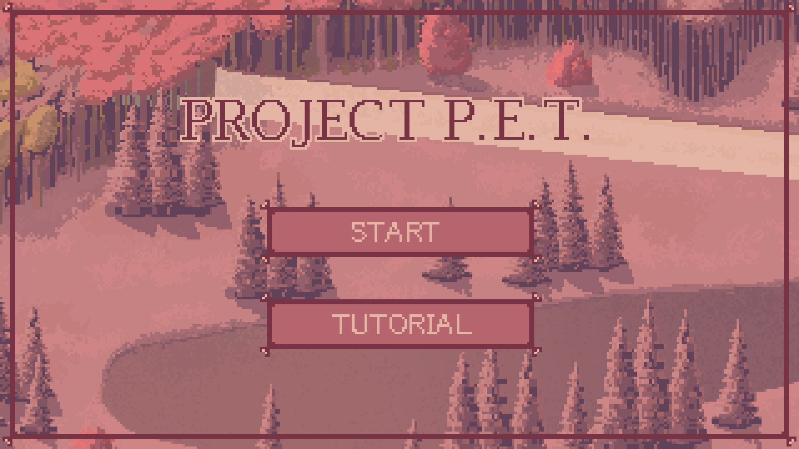

← All Projects
Shipped
Unity · C#
Project P.E.T.
A 2-minute game made start to finish in 7 days for the GMC Winter Jam, where I was the designer and the only programmer. It was one of 23 entries.

Overview
Project P.E.T. is a 2-minute game made for the GMC Winter Jam, an Australian-hosted 7-day game jam. I designed it and wrote all of its code, working with two artists (one of whom also wrote the game's text) and a composer, and we shipped a playable browser build before the deadline.
My Contributions
- Designer and sole programmer: every system and level in the game.
- Ran the Git repository for the full 7-day build.
- Published a playable WebGL build to itch.io as 1 of 23 entries in the jam.